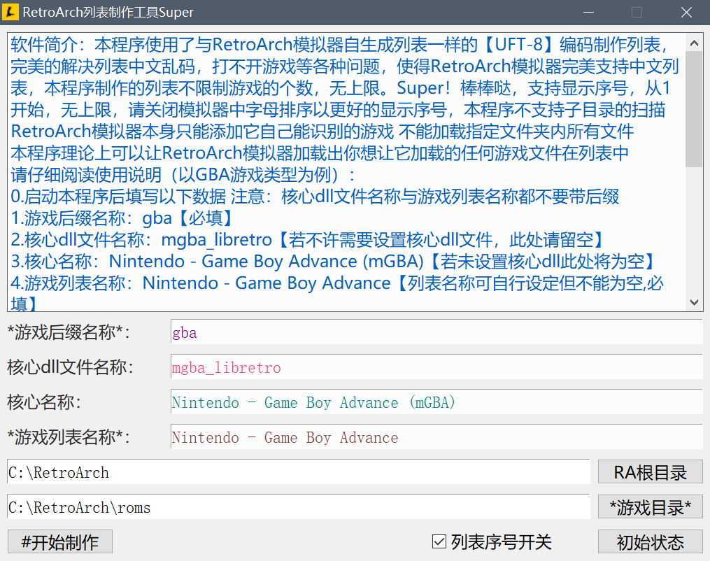
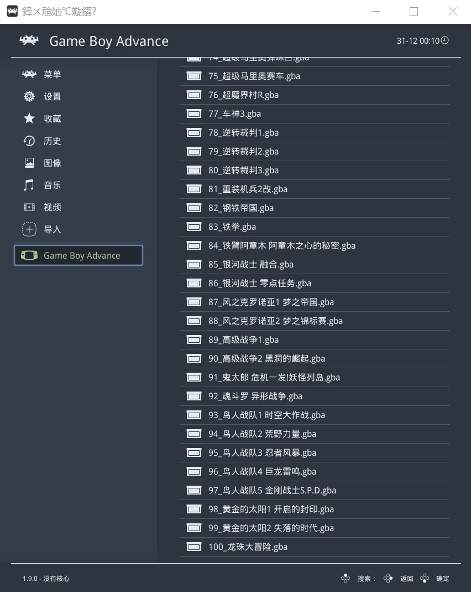
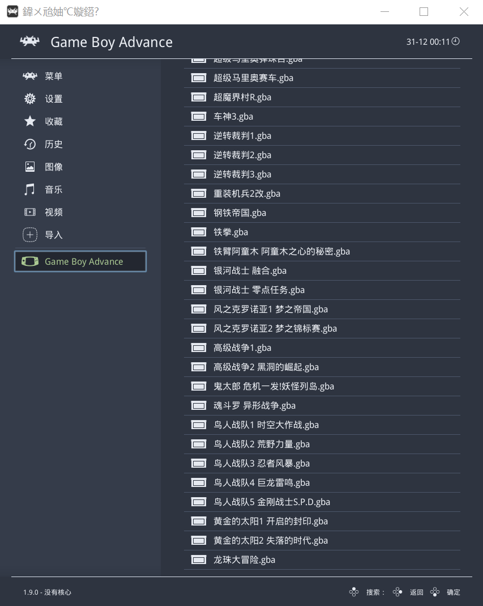

新动态：电玩街机[全新机台，对比旧版资源使用率更低，声音模拟更完善]已上线[浏览器跨平台游玩，支持电脑端、手机端、平板、电视盒子等平台设备...]支持自定义按键，支持手柄、键盘等外设输入！
站点公告：本站为非盈利性质个人站点，必然偶尔会发生无法访问的情况，介时还请多多理解，尽量第一时间恢复访问！
作者：感谢所有支持过本站的朋友们！愿天黑有灯，下雨有伞，平安幸福度一生！
无事阁原创软件_作者：不找事儿
★ 本站网址 ★ www.buzhaoshi.top ★ 或 ★ buzhaoshi.top ★
RetroArch列表制作工具Super_解决中文乱码_打不开游戏的问题
本着人人为我 我为人人的准则 分享一款RetroArch的列表制作工具
程序界面截图：

软件简介：本程序使用了与RetroArch模拟器自生成列表一样的【UFT-8】编码制作列表，完美的解决列表中文乱码，打不开游戏等各种问题，使得RetroArch模拟器完美支持中文列表，本程序制作的列表不限制游戏的个数，无上限，制作拥有3000款游戏的一个列表，耗时大概1秒钟左右，Super！棒棒哒，支持显示序号，从1开始，无上限，请关闭模拟器中字母排序以更好的显示序号，本程序不支持子目录的扫描
RetroArch模拟器本身只能添加它自己能识别的游戏 不能加载指定文件夹内所有文件
本程序理论上可以让RetroArch模拟器加载出你想让它加载的任何游戏文件在列表中
请仔细阅读使用说明（以GBA游戏类型为例）：
0.启动本程序后填写以下数据 注意：核心dll文件名称与游戏列表名称都不要带后缀
1.游戏后缀名称：gba【必填】
2.核心dll文件名称：mgba_libretro【若不许需要设置核心dll文件，此处请留空】
3.核心名称：Nintendo - Game Boy Advance (mGBA)【若未设置核心dll此处将为空】
4.游戏列表名称：Nintendo - Game Boy Advance【列表名称可自行设定但不能为空,必填】
5.确认以上四项以后 点击【RA根目录】按钮 正确选择RetroArch模拟器的安装目录
也就是retroarch.exe所在的目录【若未设置核心dll此处可留空,若此处不选择RetroArch模拟器的目录，核心dll与核心名称将为空，此处具有优先权】
6.点击【游戏目录】按钮 正确选择需要制作列表的游戏所在目录【必填】
7.点击【开始制作】按钮 等待制作完成
8.完成后自动弹出对话框，选择需要保存的路径
9.找到并将做好的列表文件放到RetroArch的安装根目录中playlists文件夹下，打开RetroArch模拟器即可加载，建议小白把数据都填全再进行制作
10.这些名称可参考playlists文件夹下模拟器自身生成的列表数据文件
11.本程序理论上是各版本都通用 在模拟器的设置中 无论是开启或关闭老列表样式 加载列表时模拟器都会自动转换列表文件为当前设置的列表样式
注：本程序仅支持扫描当前已指定目录内所有指定后缀的文件，不支持子目录的扫描
看看带序号与不带序号的对比图，下面这张为本程序制作的带序号的中文列表：

下面这张为本程序制作的不带序号的中文列表：

资源获取RetroArch列表制作工具Super: retroarchlist.zip
==================================================
给小白发几个名称参考
FBA
核心DLL文件 fbneo_libretro.dll
核心名称 Arcade (FinalBurn Neo)
列表名称 FBNeo - Arcade Games.lpl
MAME2016
核心DLL文件 mame2016_libretro.dll
核心名称 Arcade (MAME 2016)
列表名称 MAME 2016.lpl
GBA
核心DLL文件 mgba_libretro.dll
核心名称 Game Boy Advance (mGBA)
列表名称 Nintendo - Game Boy Advance.lpl
NES
核心DLL文件 mesen_libretro.dll
核心名称 Nintendo - NES / Famicom (Mesen)
列表名称 Nintendo - Nintendo Entertainment System.lpl
SNES
核心DLL文件 mesen-s_libretro.dll
核心名称 Nintendo - SNES / SFC / Game Boy / Color (Mesen-S)
列表名称 Nintendo - Super Nintendo Entertainment System.lpl
MD
核心DLL文件 genesis_plus_gx_libretro.dll
核心名称 Sega - MS/GG/MD/CD (Genesis Plus GX)
列表名称 Sega - Mega Drive - Genesis.lpl
使用RetroArch模拟器自身生成的列表名称：列表图标是以多样化呈现的。
使用自己定义的列表名称：列表图标都是一样的。
说一下“历史记录”和“收藏”
成功的进入一次游戏，“历史记录”列表中会多出这个游戏的记录，自主收藏一个游戏，那么“收藏”列表中会多出这个游戏，正因为要记录多出的游戏以便下次访问，所以模拟器需要一个文件来记录，收藏为“content_favorites.lpl”,历史记录为“content_history.lpl”,每当有收藏或历史记录的增加，模拟器自身会向记录文件中加入内容，注意了，问题就在这里，模拟器每次向记录文件中加入内容就会把文件的编码转成“ANSI”编码（这仅限于收藏和历史记录），然而模拟器本身从“ANSI”文本中又不太认识中文，所以就会出现乱码，从而导致在“收藏”和“历史记录”中打不开游戏，这一点可以点开列表中的游戏目录，再点击“信息”来查看这个游戏名称的错误。但游戏“playlists”文件夹下的列表就不一样，模拟器在新老列表样式相互之间转换，文本的编码都会是UTF8,所以本程序采用UTF8编码 制作的列表，模拟器是百分之百可以读的出来，并且可以完美打开中文列表的游戏，棕上所述，“收藏”和“历史记录”中的游戏列表就不一定打得开了，话说这模拟器无论是从操作还是文本编码来看，都是基于“linux”系统为移动平台打造的模拟器，PC版只能说是移植过来的，所以存在一些BUG也是在所难免的，但愿这模拟器能越来越成熟吧！
★ 本站网址 ★ www.buzhaoshi.top ★ 或 ★ buzhaoshi.top ★